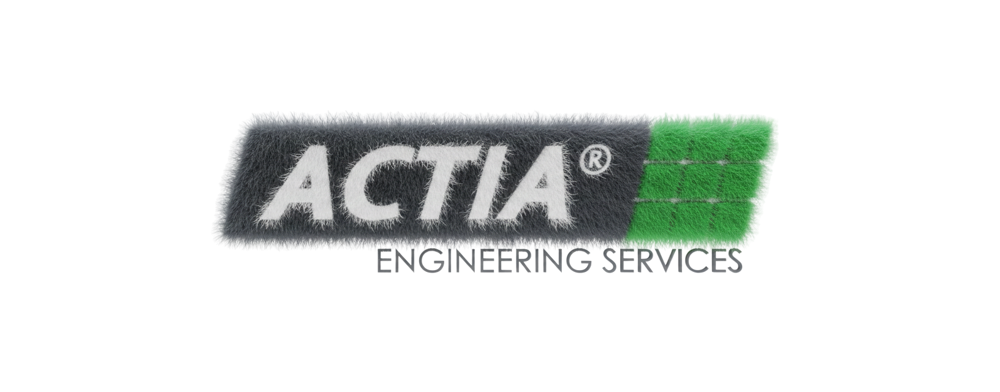

Scoring par axes pondérés – coefficients 3/6/9
Enregistrement manuel (clé unique = Nom + Client).
3=Faible, 6=Moyenne, 9=Critique
3=Faible, 6=Moyenne, 9=Forte
3=Aucune, 6=Partielle, 9=Forte
3=Faible, 6=Moyenne, 9=Forte
3=Maîtrisée, 6=Partielle, 9=Faible/nouvelle
3=Simples, 6=Multiples, 9=Critiques
3=Faible, 6=Moyen, 9=Élevé
3=Faible, 6=Moyen, 9=Élevé
3=Standard(ISO9001, ISO27001), 6=Moyen(Normes de Test (validation, qualification, conception)), 9=Critique(ASPICE, CYBER Security, Safety , AI)
3=<1 an, 6=1-2 ans, 9=>2 ans
0-5=Petite, 5-10=Moyenne, >10=Large/distribuée
3=Mono, 6=Multi 2-3, 9=Multi >3
3=Intra, 6=Extra ancien, 9=Extra nouveau
3=Forte, 6=Moyenne, 9=Faible
3=Coopératif, 6=Variable, 9=Résistant
| Score global | Classe projet | Exigences associées |
|---|---|---|
| Faible | Projet simple K3 | Pilotage standard, QA léger (sur demande CDP/Manager ponctuellement) |
| Moyen | Projet sensible K2 | Jalons qualité, gestion risques formalisée |
| Élevé | Projet critique K1 | Gouvernance renforcée, validation indépendante, reporting comité |
Formule : Criticité globale = Σ(Score Axe × Pondération) / 45 — Score axe basé sur la moyenne des coefficients (3/6/9).
Classe projet
Projet sensible K2
Exigences
Jalons qualité, gestion risques formalisée
Détail par axe
Note : contribution = (score axe moyen 3..9) × pondération.
Aucun critère au niveau critique (9)